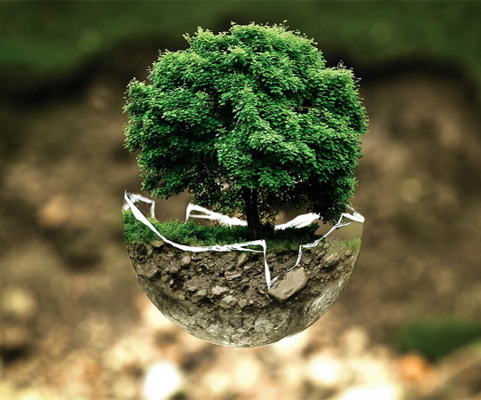

Одна из важнейших проблем современности
Экологические проблемы сегодня занимают в мире такое же важное место, как политические, социальные и экономические. Многие люди уже поняли, что активная антропогенная деятельность нанесла непоправимый урон природе, и пока не поздно нужно остановиться или хотя бы изменить свои действия, снизить негативное влияние и решать экологические проблемы мира.
Самые актуальные экопроблемы
Экологических проблем в мире так много, что их не уместить в один большой список. Некоторые из них имеют глобальный характер, а некоторые – локальный. Однако попробуем назвать самые острые проблемы окружающей среды, которые мы имеем на сегодняшний день...
Читать дальше

Eco-friendly
Данный термин относится к товарам и услугам, которые наносят уменьшенный, минимальный или вообще никакой вред на экосистемы и окружающую среду.

В чем польза эко-френдли мышления?
Поскольку мы живем в мире высоких технологий и массового потребления, кажется, жить экологично просто невозможно. Однако, на самом деле, это достаточно легко. Главное начать с себя, а не ждать, когда кто-то сделает это первым.
Как это работает?
Основные принципы идеи эко-френдли заключаются в уменьшении количества углекислого газа, выпускаемого в атмосферу, и разумном использовании природных ресурсов. Эко-френдли позволяет делать что-то полезное для себя и для планеты, а также дает возможность сэкономить денежные средства.
Читать дальше